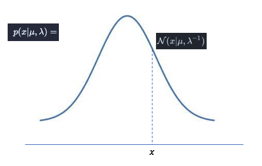

<!DOCTYPE html>
<html>
  <head>
    <meta charset="utf-8" />
    <title>bayes</title><script type="text/x-mathjax-config">
  MathJax.Hub.Config({
    jax: ["input/TeX","output/HTML-CSS"],
    extensions: ["[a11y]/accessibility-menu.js"],
    'HTML-CSS': {
      availableFonts: [],
      webFont: 'TeX',
      undefinedFamily: "serif",
      mtextFontInherit: true,
    },
    TeX: {
  "Macros": {},
  "equationNumbers": {},
  "extensions": [
    "AMSmath.js",
    "AMSsymbols.js",
    "noErrors.js",
    "noUndefined.js"
  ]
},
    showMathMenu: true
  });
</script>
<script type="text/javascript" src="https://cdnjs.cloudflare.com/ajax/libs/mathjax/2.7.4/MathJax.js"></script>
    <style>body { padding: 0; margin: 0; }
.markdown-preview-plus-view:not([data-use-github-style]) {
  padding: 2em;
  font-size: 1.2em;
  color: #abb2bf;
  background-color: #282c34;
}
.markdown-preview-plus-view:not([data-use-github-style]) span.critic.comment > span {
  background-color: #282c34;
}
.markdown-preview-plus-view:not([data-use-github-style]) > :first-child {
  margin-top: 0;
}
.markdown-preview-plus-view:not([data-use-github-style]) h1,
.markdown-preview-plus-view:not([data-use-github-style]) h2,
.markdown-preview-plus-view:not([data-use-github-style]) h3,
.markdown-preview-plus-view:not([data-use-github-style]) h4,
.markdown-preview-plus-view:not([data-use-github-style]) h5,
.markdown-preview-plus-view:not([data-use-github-style]) h6 {
  line-height: 1.2;
  margin-top: 1.5em;
  margin-bottom: 0.5em;
  color: #ffffff;
}
.markdown-preview-plus-view:not([data-use-github-style]) h1 {
  font-size: 2.4em;
  font-weight: 300;
}
.markdown-preview-plus-view:not([data-use-github-style]) h2 {
  font-size: 1.8em;
  font-weight: 400;
}
.markdown-preview-plus-view:not([data-use-github-style]) h3 {
  font-size: 1.5em;
  font-weight: 500;
}
.markdown-preview-plus-view:not([data-use-github-style]) h4 {
  font-size: 1.2em;
  font-weight: 600;
}
.markdown-preview-plus-view:not([data-use-github-style]) h5 {
  font-size: 1.1em;
  font-weight: 600;
}
.markdown-preview-plus-view:not([data-use-github-style]) h6 {
  font-size: 1em;
  font-weight: 600;
}
.markdown-preview-plus-view:not([data-use-github-style]) strong {
  color: #ffffff;
}
.markdown-preview-plus-view:not([data-use-github-style]) del {
  color: #7c879c;
}
.markdown-preview-plus-view:not([data-use-github-style]) a,
.markdown-preview-plus-view:not([data-use-github-style]) a code {
  color: #528bff;
}
.markdown-preview-plus-view:not([data-use-github-style]) img {
  max-width: 100%;
}
.markdown-preview-plus-view:not([data-use-github-style]) > p {
  margin-top: 0;
  margin-bottom: 1.5em;
}
.markdown-preview-plus-view:not([data-use-github-style]) > ul,
.markdown-preview-plus-view:not([data-use-github-style]) > ol {
  margin-bottom: 1.5em;
}
.markdown-preview-plus-view:not([data-use-github-style]) blockquote {
  margin: 1.5em 0;
  font-size: inherit;
  color: #7c879c;
  border-color: #4b5362;
  border-width: 4px;
}
.markdown-preview-plus-view:not([data-use-github-style]) hr {
  margin: 3em 0;
  border-top: 2px dashed #4b5362;
  background: none;
}
.markdown-preview-plus-view:not([data-use-github-style]) table {
  margin: 1.5em 0;
}
.markdown-preview-plus-view:not([data-use-github-style]) th {
  color: #ffffff;
}
.markdown-preview-plus-view:not([data-use-github-style]) th,
.markdown-preview-plus-view:not([data-use-github-style]) td {
  padding: 0.66em 1em;
  border: 1px solid #4b5362;
}
.markdown-preview-plus-view:not([data-use-github-style]) pre,
.markdown-preview-plus-view:not([data-use-github-style]) code {
  color: #ffffff;
  background-color: #3a3f4b;
}
.markdown-preview-plus-view:not([data-use-github-style]) pre,
.markdown-preview-plus-view:not([data-use-github-style]) pre.editor-colors {
  margin: 1.5em 0;
  padding: 1em;
  font-size: 0.92em;
  border-radius: 3px;
  background-color: #31363f;
}
.markdown-preview-plus-view:not([data-use-github-style]) kbd {
  color: #ffffff;
  border: 1px solid #4b5362;
  border-bottom: 2px solid #3e4451;
  background-color: #3a3f4b;
}

@include 'style-variables';
.markdown-preview-plus-view {
  display: block;
  overflow-x: hidden;
}
.markdown-preview-plus-view .emoji {
  max-width: 1em !important;
}
.markdown-preview-plus-view del {
  text-decoration: none;
  position: relative;
}
.markdown-preview-plus-view del::after {
  border-bottom: 1px solid black;
  content: '';
  left: 0;
  position: absolute;
  right: 0;
  top: 50%;
}
.markdown-preview-plus-view .flash {
  -webkit-animation: flash 1s ease-out;
  -webkit-animation-iteration-count: 1;
  outline: 1px solid rgba(255, 0, 0, 0);
}
@-webkit-keyframes flash {
  0% {
    outline-color: rgba(255, 0, 0, 0);
  }
  50% {
    outline-color: #ff0000;
  }
  100% {
    outline-color: rgba(255, 0, 0, 0);
  }
}
.markdown-preview-plus-view pre.editor-colors {
  display: block;
  overflow: auto;
  white-space: pre-line;
}
.markdown-preview-plus-view pre.editor-colors .line {
  display: inline;
}
@media print {
  .markdown-preview-plus-view pre.editor-colors {
    overflow: visible !important;
  }
  .markdown-preview-plus-view pre.editor-colors .line {
    white-space: pre-wrap !important;
  }
}
.markdown-preview-plus-view ul.contains-task-list li.task-list-item {
  position: relative;
  list-style-type: none;
}
.markdown-preview-plus-view ul.contains-task-list li.task-list-item input.task-list-item-checkbox {
  position: absolute;
  transform: translateX(-100%);
  width: 30px;
}
.markdown-preview-plus-view span.critic.comment {
  position: relative;
}
.markdown-preview-plus-view span.critic.comment::before {
  content: '\1f4ac';
  position: initial;
}
.markdown-preview-plus-view span.critic.comment > span {
  display: none;
}
.markdown-preview-plus-view span.critic.comment:hover > span {
  display: initial;
  position: absolute;
  top: 100%;
  left: 0;
  border: 1px solid;
  border-radius: 5px;
  max-height: 4em;
  overflow: auto;
}
.markdown-preview-plus-view span.critic.comment:focus > span {
  display: initial;
  text-decoration: underline;
  position: initial;
  top: auto;
  left: auto;
  border: initial;
  border-radius: initial;
}

body.markdown-preview-plus-view[data-use-github-style] {
  overflow: initial !important;
}
.markdown-preview-plus-view[data-use-github-style] {
  overflow: hidden;
  font-family: "Helvetica Neue", Helvetica, "Segoe UI", Arial, freesans, sans-serif;
  line-height: 1.6;
  word-wrap: break-word;
  padding: 30px;
  font-size: 16px;
  color: #333;
  background-color: #fff;
}
.markdown-preview-plus-view[data-use-github-style] > *:first-child {
  margin-top: 0 !important;
}
.markdown-preview-plus-view[data-use-github-style] > *:last-child {
  margin-bottom: 0 !important;
}
.markdown-preview-plus-view[data-use-github-style] a:not([href]) {
  color: inherit;
  text-decoration: none;
}
.markdown-preview-plus-view[data-use-github-style] .absent {
  color: #c00;
}
.markdown-preview-plus-view[data-use-github-style] .anchor {
  position: absolute;
  top: 0;
  left: 0;
  display: block;
  padding-right: 6px;
  padding-left: 30px;
  margin-left: -30px;
}
.markdown-preview-plus-view[data-use-github-style] .anchor:focus {
  outline: none;
}
.markdown-preview-plus-view[data-use-github-style] h1,
.markdown-preview-plus-view[data-use-github-style] h2,
.markdown-preview-plus-view[data-use-github-style] h3,
.markdown-preview-plus-view[data-use-github-style] h4,
.markdown-preview-plus-view[data-use-github-style] h5,
.markdown-preview-plus-view[data-use-github-style] h6 {
  position: relative;
  margin-top: 1em;
  margin-bottom: 16px;
  font-weight: bold;
  line-height: 1.4;
}
.markdown-preview-plus-view[data-use-github-style] h1 .octicon-link,
.markdown-preview-plus-view[data-use-github-style] h2 .octicon-link,
.markdown-preview-plus-view[data-use-github-style] h3 .octicon-link,
.markdown-preview-plus-view[data-use-github-style] h4 .octicon-link,
.markdown-preview-plus-view[data-use-github-style] h5 .octicon-link,
.markdown-preview-plus-view[data-use-github-style] h6 .octicon-link {
  display: none;
  color: #000;
  vertical-align: middle;
}
.markdown-preview-plus-view[data-use-github-style] h1:hover .anchor,
.markdown-preview-plus-view[data-use-github-style] h2:hover .anchor,
.markdown-preview-plus-view[data-use-github-style] h3:hover .anchor,
.markdown-preview-plus-view[data-use-github-style] h4:hover .anchor,
.markdown-preview-plus-view[data-use-github-style] h5:hover .anchor,
.markdown-preview-plus-view[data-use-github-style] h6:hover .anchor {
  padding-left: 8px;
  margin-left: -30px;
  text-decoration: none;
}
.markdown-preview-plus-view[data-use-github-style] h1:hover .anchor .octicon-link,
.markdown-preview-plus-view[data-use-github-style] h2:hover .anchor .octicon-link,
.markdown-preview-plus-view[data-use-github-style] h3:hover .anchor .octicon-link,
.markdown-preview-plus-view[data-use-github-style] h4:hover .anchor .octicon-link,
.markdown-preview-plus-view[data-use-github-style] h5:hover .anchor .octicon-link,
.markdown-preview-plus-view[data-use-github-style] h6:hover .anchor .octicon-link {
  display: inline-block;
}
.markdown-preview-plus-view[data-use-github-style] h1 tt,
.markdown-preview-plus-view[data-use-github-style] h2 tt,
.markdown-preview-plus-view[data-use-github-style] h3 tt,
.markdown-preview-plus-view[data-use-github-style] h4 tt,
.markdown-preview-plus-view[data-use-github-style] h5 tt,
.markdown-preview-plus-view[data-use-github-style] h6 tt,
.markdown-preview-plus-view[data-use-github-style] h1 code,
.markdown-preview-plus-view[data-use-github-style] h2 code,
.markdown-preview-plus-view[data-use-github-style] h3 code,
.markdown-preview-plus-view[data-use-github-style] h4 code,
.markdown-preview-plus-view[data-use-github-style] h5 code,
.markdown-preview-plus-view[data-use-github-style] h6 code {
  font-size: inherit;
}
.markdown-preview-plus-view[data-use-github-style] h1 {
  padding-bottom: 0.3em;
  font-size: 2.25em;
  line-height: 1.2;
  border-bottom: 1px solid #eee;
}
.markdown-preview-plus-view[data-use-github-style] h1 .anchor {
  line-height: 1;
}
.markdown-preview-plus-view[data-use-github-style] h2 {
  padding-bottom: 0.3em;
  font-size: 1.75em;
  line-height: 1.225;
  border-bottom: 1px solid #eee;
}
.markdown-preview-plus-view[data-use-github-style] h2 .anchor {
  line-height: 1;
}
.markdown-preview-plus-view[data-use-github-style] h3 {
  font-size: 1.5em;
  line-height: 1.43;
}
.markdown-preview-plus-view[data-use-github-style] h3 .anchor {
  line-height: 1.2;
}
.markdown-preview-plus-view[data-use-github-style] h4 {
  font-size: 1.25em;
}
.markdown-preview-plus-view[data-use-github-style] h4 .anchor {
  line-height: 1.2;
}
.markdown-preview-plus-view[data-use-github-style] h5 {
  font-size: 1em;
}
.markdown-preview-plus-view[data-use-github-style] h5 .anchor {
  line-height: 1.1;
}
.markdown-preview-plus-view[data-use-github-style] h6 {
  font-size: 1em;
  color: #777;
}
.markdown-preview-plus-view[data-use-github-style] h6 .anchor {
  line-height: 1.1;
}
.markdown-preview-plus-view[data-use-github-style] p,
.markdown-preview-plus-view[data-use-github-style] blockquote,
.markdown-preview-plus-view[data-use-github-style] ul,
.markdown-preview-plus-view[data-use-github-style] ol,
.markdown-preview-plus-view[data-use-github-style] dl,
.markdown-preview-plus-view[data-use-github-style] table,
.markdown-preview-plus-view[data-use-github-style] pre {
  margin-top: 0;
  margin-bottom: 16px;
}
.markdown-preview-plus-view[data-use-github-style] hr {
  height: 4px;
  padding: 0;
  margin: 16px 0;
  background-color: #e7e7e7;
  border: 0 none;
}
.markdown-preview-plus-view[data-use-github-style] ul,
.markdown-preview-plus-view[data-use-github-style] ol {
  padding-left: 2em;
}
.markdown-preview-plus-view[data-use-github-style] ul.no-list,
.markdown-preview-plus-view[data-use-github-style] ol.no-list {
  padding: 0;
  list-style-type: none;
}
.markdown-preview-plus-view[data-use-github-style] ul ul,
.markdown-preview-plus-view[data-use-github-style] ul ol,
.markdown-preview-plus-view[data-use-github-style] ol ol,
.markdown-preview-plus-view[data-use-github-style] ol ul {
  margin-top: 0;
  margin-bottom: 0;
}
.markdown-preview-plus-view[data-use-github-style] li > p {
  margin-top: 16px;
}
.markdown-preview-plus-view[data-use-github-style] dl {
  padding: 0;
}
.markdown-preview-plus-view[data-use-github-style] dl dt {
  padding: 0;
  margin-top: 16px;
  font-size: 1em;
  font-style: italic;
  font-weight: bold;
}
.markdown-preview-plus-view[data-use-github-style] dl dd {
  padding: 0 16px;
  margin-bottom: 16px;
}
.markdown-preview-plus-view[data-use-github-style] blockquote {
  padding: 0 15px;
  color: #777;
  border-left: 4px solid #ddd;
}
.markdown-preview-plus-view[data-use-github-style] blockquote > :first-child {
  margin-top: 0;
}
.markdown-preview-plus-view[data-use-github-style] blockquote > :last-child {
  margin-bottom: 0;
}
.markdown-preview-plus-view[data-use-github-style] table {
  display: block;
  width: 100%;
  overflow: auto;
  word-break: normal;
  word-break: keep-all;
}
.markdown-preview-plus-view[data-use-github-style] table th {
  font-weight: bold;
}
.markdown-preview-plus-view[data-use-github-style] table th,
.markdown-preview-plus-view[data-use-github-style] table td {
  padding: 6px 13px;
  border: 1px solid #ddd;
}
.markdown-preview-plus-view[data-use-github-style] table tr {
  background-color: #fff;
  border-top: 1px solid #ccc;
}
.markdown-preview-plus-view[data-use-github-style] table tr:nth-child(2n) {
  background-color: #f8f8f8;
}
.markdown-preview-plus-view[data-use-github-style] img {
  max-width: 100%;
  -moz-box-sizing: border-box;
  box-sizing: border-box;
}
.markdown-preview-plus-view[data-use-github-style] .emoji {
  max-width: none;
}
.markdown-preview-plus-view[data-use-github-style] span.frame {
  display: block;
  overflow: hidden;
}
.markdown-preview-plus-view[data-use-github-style] span.frame > span {
  display: block;
  float: left;
  width: auto;
  padding: 7px;
  margin: 13px 0 0;
  overflow: hidden;
  border: 1px solid #ddd;
}
.markdown-preview-plus-view[data-use-github-style] span.frame span img {
  display: block;
  float: left;
}
.markdown-preview-plus-view[data-use-github-style] span.frame span span {
  display: block;
  padding: 5px 0 0;
  clear: both;
  color: #333;
}
.markdown-preview-plus-view[data-use-github-style] span.align-center {
  display: block;
  overflow: hidden;
  clear: both;
}
.markdown-preview-plus-view[data-use-github-style] span.align-center > span {
  display: block;
  margin: 13px auto 0;
  overflow: hidden;
  text-align: center;
}
.markdown-preview-plus-view[data-use-github-style] span.align-center span img {
  margin: 0 auto;
  text-align: center;
}
.markdown-preview-plus-view[data-use-github-style] span.align-right {
  display: block;
  overflow: hidden;
  clear: both;
}
.markdown-preview-plus-view[data-use-github-style] span.align-right > span {
  display: block;
  margin: 13px 0 0;
  overflow: hidden;
  text-align: right;
}
.markdown-preview-plus-view[data-use-github-style] span.align-right span img {
  margin: 0;
  text-align: right;
}
.markdown-preview-plus-view[data-use-github-style] span.float-left {
  display: block;
  float: left;
  margin-right: 13px;
  overflow: hidden;
}
.markdown-preview-plus-view[data-use-github-style] span.float-left span {
  margin: 13px 0 0;
}
.markdown-preview-plus-view[data-use-github-style] span.float-right {
  display: block;
  float: right;
  margin-left: 13px;
  overflow: hidden;
}
.markdown-preview-plus-view[data-use-github-style] span.float-right > span {
  display: block;
  margin: 13px auto 0;
  overflow: hidden;
  text-align: right;
}
.markdown-preview-plus-view[data-use-github-style] code,
.markdown-preview-plus-view[data-use-github-style] tt {
  padding: 0;
  padding-top: 0.2em;
  padding-bottom: 0.2em;
  margin: 0;
  font-size: 85%;
  background-color: rgba(0, 0, 0, 0.04);
  border-radius: 3px;
}
.markdown-preview-plus-view[data-use-github-style] code:before,
.markdown-preview-plus-view[data-use-github-style] tt:before,
.markdown-preview-plus-view[data-use-github-style] code:after,
.markdown-preview-plus-view[data-use-github-style] tt:after {
  letter-spacing: -0.2em;
  content: "\00a0";
}
.markdown-preview-plus-view[data-use-github-style] code br,
.markdown-preview-plus-view[data-use-github-style] tt br {
  display: none;
}
.markdown-preview-plus-view[data-use-github-style] del code {
  text-decoration: inherit;
}
.markdown-preview-plus-view[data-use-github-style] pre > code {
  padding: 0;
  margin: 0;
  font-size: 100%;
  word-break: normal;
  white-space: pre;
  background: transparent;
  border: 0;
}
.markdown-preview-plus-view[data-use-github-style] .highlight {
  margin-bottom: 16px;
}
.markdown-preview-plus-view[data-use-github-style] .highlight pre,
.markdown-preview-plus-view[data-use-github-style] pre {
  padding: 16px;
  overflow: auto;
  font-size: 85%;
  line-height: 1.45;
  background-color: #f7f7f7;
  border-radius: 3px;
}
.markdown-preview-plus-view[data-use-github-style] .highlight pre {
  margin-bottom: 0;
  word-break: normal;
}
.markdown-preview-plus-view[data-use-github-style] pre {
  word-wrap: normal;
}
.markdown-preview-plus-view[data-use-github-style] pre code,
.markdown-preview-plus-view[data-use-github-style] pre tt {
  display: inline;
  max-width: initial;
  padding: 0;
  margin: 0;
  overflow: initial;
  line-height: inherit;
  word-wrap: normal;
  background-color: transparent;
  border: 0;
}
.markdown-preview-plus-view[data-use-github-style] pre code:before,
.markdown-preview-plus-view[data-use-github-style] pre tt:before,
.markdown-preview-plus-view[data-use-github-style] pre code:after,
.markdown-preview-plus-view[data-use-github-style] pre tt:after {
  content: normal;
}
.markdown-preview-plus-view[data-use-github-style] kbd {
  display: inline-block;
  padding: 3px 5px;
  font-size: 11px;
  line-height: 10px;
  color: #555;
  vertical-align: middle;
  background-color: #fcfcfc;
  border: solid 1px #ccc;
  border-bottom-color: #bbb;
  border-radius: 3px;
  box-shadow: inset 0 -1px 0 #bbb;
}
.markdown-preview-plus-view[data-use-github-style] span.critic.comment > span {
  background-color: #fff;
}
.markdown-preview-plus-view[data-use-github-style] a {
  color: #337ab7;
}
.markdown-preview-plus-view[data-use-github-style] pre,
.markdown-preview-plus-view[data-use-github-style] code {
  color: inherit;
}
.markdown-preview-plus-view[data-use-github-style] pre,
.markdown-preview-plus-view[data-use-github-style] pre.editor-colors {
  padding: 0.8em 1em;
  margin-bottom: 1em;
  font-size: 0.85em;
  border-radius: 4px;
  overflow: auto;
}

.bracket-matcher .region {
  border-bottom: 1px dotted lime;
  position: absolute;
}
.line-number.bracket-matcher.bracket-matcher {
  color: #abb2bf;
  background-color: #3a3f4b;
}

.spell-check-misspelling .region {
  border-bottom: 2px dotted rgba(255, 51, 51, 0.75);
}
.spell-check-corrections {
  width: 25em !important;
}

pre.editor-colors {
  background-color: #282c34;
  color: #abb2bf;
}
pre.editor-colors .line.cursor-line {
  background-color: rgba(153, 187, 255, 0.04);
}
pre.editor-colors .invisible {
  color: #abb2bf;
}
pre.editor-colors .cursor {
  border-left: 2px solid #528bff;
}
pre.editor-colors .selection .region {
  background-color: #3e4451;
}
pre.editor-colors .bracket-matcher .region {
  border-bottom: 1px solid #528bff;
  box-sizing: border-box;
}
pre.editor-colors .invisible-character {
  color: rgba(171, 178, 191, 0.15);
}
pre.editor-colors .indent-guide {
  color: rgba(171, 178, 191, 0.15);
}
pre.editor-colors .wrap-guide {
  background-color: rgba(171, 178, 191, 0.15);
}
pre.editor-colors .find-result .region.region.region,
pre.editor-colors .current-result .region.region.region {
  border-radius: 2px;
  background-color: rgba(82, 139, 255, 0.24);
  transition: border-color 0.4s;
}
pre.editor-colors .find-result .region.region.region {
  border: 2px solid transparent;
}
pre.editor-colors .current-result .region.region.region {
  border: 2px solid #528bff;
  transition-duration: .1s;
}
pre.editor-colors .gutter .line-number {
  color: #636d83;
  -webkit-font-smoothing: antialiased;
}
pre.editor-colors .gutter .line-number.cursor-line {
  color: #abb2bf;
  background-color: #3a3f4b;
}
pre.editor-colors .gutter .line-number.cursor-line-no-selection {
  background-color: transparent;
}
pre.editor-colors .gutter .line-number .icon-right {
  color: #abb2bf;
}
pre.editor-colors .gutter:not(.git-diff-icon) .line-number.git-line-removed.git-line-removed::before {
  bottom: -3px;
}
pre.editor-colors .gutter:not(.git-diff-icon) .line-number.git-line-removed::after {
  content: "";
  position: absolute;
  left: 0px;
  bottom: 0px;
  width: 25px;
  border-bottom: 1px dotted rgba(224, 82, 82, 0.5);
  pointer-events: none;
}
pre.editor-colors .gutter .line-number.folded,
pre.editor-colors .gutter .line-number:after,
pre.editor-colors .fold-marker:after {
  color: #abb2bf;
}
.syntax--comment {
  color: #5c6370;
  font-style: italic;
}
.syntax--comment .syntax--markup.syntax--link {
  color: #5c6370;
}
.syntax--entity.syntax--name.syntax--type {
  color: #e5c07b;
}
.syntax--entity.syntax--other.syntax--inherited-class {
  color: #98c379;
}
.syntax--keyword {
  color: #c678dd;
}
.syntax--keyword.syntax--control {
  color: #c678dd;
}
.syntax--keyword.syntax--operator {
  color: #abb2bf;
}
.syntax--keyword.syntax--other.syntax--special-method {
  color: #61afef;
}
.syntax--keyword.syntax--other.syntax--unit {
  color: #d19a66;
}
.syntax--storage {
  color: #c678dd;
}
.syntax--storage.syntax--type.syntax--annotation,
.syntax--storage.syntax--type.syntax--primitive {
  color: #c678dd;
}
.syntax--storage.syntax--modifier.syntax--package,
.syntax--storage.syntax--modifier.syntax--import {
  color: #abb2bf;
}
.syntax--constant {
  color: #d19a66;
}
.syntax--constant.syntax--variable {
  color: #d19a66;
}
.syntax--constant.syntax--character.syntax--escape {
  color: #56b6c2;
}
.syntax--constant.syntax--numeric {
  color: #d19a66;
}
.syntax--constant.syntax--other.syntax--color {
  color: #56b6c2;
}
.syntax--constant.syntax--other.syntax--symbol {
  color: #56b6c2;
}
.syntax--variable {
  color: #e06c75;
}
.syntax--variable.syntax--interpolation {
  color: #be5046;
}
.syntax--variable.syntax--parameter {
  color: #abb2bf;
}
.syntax--string {
  color: #98c379;
}
.syntax--string.syntax--regexp {
  color: #56b6c2;
}
.syntax--string.syntax--regexp .syntax--source.syntax--ruby.syntax--embedded {
  color: #e5c07b;
}
.syntax--string.syntax--other.syntax--link {
  color: #e06c75;
}
.syntax--punctuation.syntax--definition.syntax--comment {
  color: #5c6370;
}
.syntax--punctuation.syntax--definition.syntax--method-parameters,
.syntax--punctuation.syntax--definition.syntax--function-parameters,
.syntax--punctuation.syntax--definition.syntax--parameters,
.syntax--punctuation.syntax--definition.syntax--separator,
.syntax--punctuation.syntax--definition.syntax--seperator,
.syntax--punctuation.syntax--definition.syntax--array {
  color: #abb2bf;
}
.syntax--punctuation.syntax--definition.syntax--heading,
.syntax--punctuation.syntax--definition.syntax--identity {
  color: #61afef;
}
.syntax--punctuation.syntax--definition.syntax--bold {
  color: #e5c07b;
  font-weight: bold;
}
.syntax--punctuation.syntax--definition.syntax--italic {
  color: #c678dd;
  font-style: italic;
}
.syntax--punctuation.syntax--section.syntax--embedded {
  color: #be5046;
}
.syntax--punctuation.syntax--section.syntax--method,
.syntax--punctuation.syntax--section.syntax--class,
.syntax--punctuation.syntax--section.syntax--inner-class {
  color: #abb2bf;
}
.syntax--support.syntax--class {
  color: #e5c07b;
}
.syntax--support.syntax--type {
  color: #56b6c2;
}
.syntax--support.syntax--function {
  color: #56b6c2;
}
.syntax--support.syntax--function.syntax--any-method {
  color: #61afef;
}
.syntax--entity.syntax--name.syntax--function {
  color: #61afef;
}
.syntax--entity.syntax--name.syntax--class,
.syntax--entity.syntax--name.syntax--type.syntax--class {
  color: #e5c07b;
}
.syntax--entity.syntax--name.syntax--section {
  color: #61afef;
}
.syntax--entity.syntax--name.syntax--tag {
  color: #e06c75;
}
.syntax--entity.syntax--other.syntax--attribute-name {
  color: #d19a66;
}
.syntax--entity.syntax--other.syntax--attribute-name.syntax--id {
  color: #61afef;
}
.syntax--meta.syntax--class {
  color: #e5c07b;
}
.syntax--meta.syntax--class.syntax--body {
  color: #abb2bf;
}
.syntax--meta.syntax--method-call,
.syntax--meta.syntax--method {
  color: #abb2bf;
}
.syntax--meta.syntax--definition.syntax--variable {
  color: #e06c75;
}
.syntax--meta.syntax--link {
  color: #d19a66;
}
.syntax--meta.syntax--require {
  color: #61afef;
}
.syntax--meta.syntax--selector {
  color: #c678dd;
}
.syntax--meta.syntax--separator {
  color: #abb2bf;
}
.syntax--meta.syntax--tag {
  color: #abb2bf;
}
.syntax--underline {
  text-decoration: underline;
}
.syntax--none {
  color: #abb2bf;
}
.syntax--invalid.syntax--deprecated {
  color: #523d14 !important;
  background-color: #e0c285 !important;
}
.syntax--invalid.syntax--illegal {
  color: white !important;
  background-color: #e05252 !important;
}
.syntax--markup.syntax--bold {
  color: #d19a66;
  font-weight: bold;
}
.syntax--markup.syntax--changed {
  color: #c678dd;
}
.syntax--markup.syntax--deleted {
  color: #e06c75;
}
.syntax--markup.syntax--italic {
  color: #c678dd;
  font-style: italic;
}
.syntax--markup.syntax--heading {
  color: #e06c75;
}
.syntax--markup.syntax--heading .syntax--punctuation.syntax--definition.syntax--heading {
  color: #61afef;
}
.syntax--markup.syntax--link {
  color: #56b6c2;
}
.syntax--markup.syntax--inserted {
  color: #98c379;
}
.syntax--markup.syntax--quote {
  color: #d19a66;
}
.syntax--markup.syntax--raw {
  color: #98c379;
}
.syntax--source.syntax--c .syntax--keyword.syntax--operator {
  color: #c678dd;
}
.syntax--source.syntax--cpp .syntax--keyword.syntax--operator {
  color: #c678dd;
}
.syntax--source.syntax--cs .syntax--keyword.syntax--operator {
  color: #c678dd;
}
.syntax--source.syntax--css .syntax--property-name,
.syntax--source.syntax--css .syntax--property-value {
  color: #828997;
}
.syntax--source.syntax--css .syntax--property-name.syntax--support,
.syntax--source.syntax--css .syntax--property-value.syntax--support {
  color: #abb2bf;
}
.syntax--source.syntax--elixir .syntax--source.syntax--embedded.syntax--source {
  color: #abb2bf;
}
.syntax--source.syntax--elixir .syntax--constant.syntax--language,
.syntax--source.syntax--elixir .syntax--constant.syntax--numeric,
.syntax--source.syntax--elixir .syntax--constant.syntax--definition {
  color: #61afef;
}
.syntax--source.syntax--elixir .syntax--variable.syntax--definition,
.syntax--source.syntax--elixir .syntax--variable.syntax--anonymous {
  color: #c678dd;
}
.syntax--source.syntax--elixir .syntax--parameter.syntax--variable.syntax--function {
  color: #d19a66;
  font-style: italic;
}
.syntax--source.syntax--elixir .syntax--quoted {
  color: #98c379;
}
.syntax--source.syntax--elixir .syntax--keyword.syntax--special-method,
.syntax--source.syntax--elixir .syntax--embedded.syntax--section,
.syntax--source.syntax--elixir .syntax--embedded.syntax--source.syntax--empty {
  color: #e06c75;
}
.syntax--source.syntax--elixir .syntax--readwrite.syntax--module .syntax--punctuation {
  color: #e06c75;
}
.syntax--source.syntax--elixir .syntax--regexp.syntax--section,
.syntax--source.syntax--elixir .syntax--regexp.syntax--string {
  color: #be5046;
}
.syntax--source.syntax--elixir .syntax--separator,
.syntax--source.syntax--elixir .syntax--keyword.syntax--operator {
  color: #d19a66;
}
.syntax--source.syntax--elixir .syntax--variable.syntax--constant {
  color: #e5c07b;
}
.syntax--source.syntax--elixir .syntax--array,
.syntax--source.syntax--elixir .syntax--scope,
.syntax--source.syntax--elixir .syntax--section {
  color: #828997;
}
.syntax--source.syntax--gfm .syntax--markup {
  -webkit-font-smoothing: auto;
}
.syntax--source.syntax--gfm .syntax--link .syntax--entity {
  color: #61afef;
}
.syntax--source.syntax--go .syntax--storage.syntax--type.syntax--string {
  color: #c678dd;
}
.syntax--source.syntax--ini .syntax--keyword.syntax--other.syntax--definition.syntax--ini {
  color: #e06c75;
}
.syntax--source.syntax--java .syntax--storage.syntax--modifier.syntax--import {
  color: #e5c07b;
}
.syntax--source.syntax--java .syntax--storage.syntax--type {
  color: #e5c07b;
}
.syntax--source.syntax--java .syntax--keyword.syntax--operator.syntax--instanceof {
  color: #c678dd;
}
.syntax--source.syntax--java-properties .syntax--meta.syntax--key-pair {
  color: #e06c75;
}
.syntax--source.syntax--java-properties .syntax--meta.syntax--key-pair > .syntax--punctuation {
  color: #abb2bf;
}
.syntax--source.syntax--js .syntax--keyword.syntax--operator {
  color: #56b6c2;
}
.syntax--source.syntax--js .syntax--keyword.syntax--operator.syntax--delete,
.syntax--source.syntax--js .syntax--keyword.syntax--operator.syntax--in,
.syntax--source.syntax--js .syntax--keyword.syntax--operator.syntax--of,
.syntax--source.syntax--js .syntax--keyword.syntax--operator.syntax--instanceof,
.syntax--source.syntax--js .syntax--keyword.syntax--operator.syntax--new,
.syntax--source.syntax--js .syntax--keyword.syntax--operator.syntax--typeof,
.syntax--source.syntax--js .syntax--keyword.syntax--operator.syntax--void {
  color: #c678dd;
}
.syntax--source.syntax--json .syntax--meta.syntax--structure.syntax--dictionary.syntax--json > .syntax--string.syntax--quoted.syntax--json {
  color: #e06c75;
}
.syntax--source.syntax--json .syntax--meta.syntax--structure.syntax--dictionary.syntax--json > .syntax--string.syntax--quoted.syntax--json > .syntax--punctuation.syntax--string {
  color: #e06c75;
}
.syntax--source.syntax--json .syntax--meta.syntax--structure.syntax--dictionary.syntax--json > .syntax--value.syntax--json > .syntax--string.syntax--quoted.syntax--json,
.syntax--source.syntax--json .syntax--meta.syntax--structure.syntax--array.syntax--json > .syntax--value.syntax--json > .syntax--string.syntax--quoted.syntax--json,
.syntax--source.syntax--json .syntax--meta.syntax--structure.syntax--dictionary.syntax--json > .syntax--value.syntax--json > .syntax--string.syntax--quoted.syntax--json > .syntax--punctuation,
.syntax--source.syntax--json .syntax--meta.syntax--structure.syntax--array.syntax--json > .syntax--value.syntax--json > .syntax--string.syntax--quoted.syntax--json > .syntax--punctuation {
  color: #98c379;
}
.syntax--source.syntax--json .syntax--meta.syntax--structure.syntax--dictionary.syntax--json > .syntax--constant.syntax--language.syntax--json,
.syntax--source.syntax--json .syntax--meta.syntax--structure.syntax--array.syntax--json > .syntax--constant.syntax--language.syntax--json {
  color: #56b6c2;
}
.syntax--source.syntax--ruby .syntax--constant.syntax--other.syntax--symbol > .syntax--punctuation {
  color: inherit;
}
.syntax--source.syntax--php .syntax--class.syntax--bracket {
  color: #abb2bf;
}
.syntax--source.syntax--python .syntax--keyword.syntax--operator.syntax--logical.syntax--python {
  color: #c678dd;
}
.syntax--source.syntax--python .syntax--variable.syntax--parameter {
  color: #d19a66;
}
</style>

  </head>
  <body class="markdown-preview-plus-view">
    <h1>3.3.3　平均・精度が未知の場合</h1>
<span class="math"><script type="math/tex; mode=display">p(x|\mu,\lambda) = \mathcal{N}(x|\mu,{\lambda}^{-1}) \tag{3.80}
</script></span>
<p>左辺について、変数の明示の規則は <span class="math"><script type="math/tex">(3.47),(3.64)</script></span> などと同様に、未知数の場合は明示する。</p>
<p>左辺→右辺の気持ちは、 <span class="math"><script type="math/tex">\mu,\lambda</script></span> が分かっていない場合にデータ <span class="math"><script type="math/tex">x = x</script></span> が降ってくる確率をガウス分布に問うたなら、ガウス分布の式 <span class="math"><script type="math/tex">(2,64)</script></span>  に <span class="math"><script type="math/tex">x,\mu,{\lambda}</script></span> を代入すれば確率を吐き出してくれる、と解釈できる。<br>
(ただし、3.3.3では精度パラメータ <span class="math"><script type="math/tex">{\lambda}^{-1} \equiv {\sigma}^{2}</script></span> とする。)</p>
<p></p>
<p>
<span class="math"><script type="math/tex">m,\beta,a,b</script></span> を固定パラメータとして、ある <span class="math"><script type="math/tex">\mu = \mu, \lambda = \lambda</script></span> が（同時に）発生する確率  <span class="math"><script type="math/tex">p(\mu,\lambda)</script></span> 、つまり <span class="math"><script type="math/tex">\mu, \lambda</script></span> の事前分布として <span class="math"><script type="math/tex">(3.81)</script></span> を用いると、同じ形式の事後分布を得られることが分かっている。</p>
<p><span class="math"><script type="math/tex">p(\mu, \lambda) = \mathcal{N}(\mu|m,{(\beta\lambda)}^{-1})\mathrm{Gam}(\lambda|a,b)\tag{3.81}</script></span></p>
<p>この章での目標は、新しい観測データ<span class="math"><script type="math/tex">x</script></span>を観測したとき(=事後)、その分布すなわち事後分布を決めるような超パラメータ <span class="math"><script type="math/tex">\hat{m},\hat{\beta},\hat{a},\hat{b}</script></span> を求めることである。</p>
<p><span class="math"><script type="math/tex">(3.81)</script></span> では <span class="math"><script type="math/tex">\mu,\lambda</script></span> は独立ではないが（図3.5の3番目）、それぞれの以前導出した結果を流用することを考える。<br>

ここで、<span class="math"><script type="math/tex">(3.81)</script></span> 式を条件付き確率を見るように眺めると、以降少しだけ気持ちが楽になる。つまり、 <span class="math"><script type="math/tex">\mathrm{Gam}(\lambda|a,b)</script></span> によって <span class="math"><script type="math/tex">\lambda</script></span>
は既知だと分かったという条件下での <span class="math"><script type="math/tex">\mathcal{N}(\mu|m,{(\beta\lambda)}^{-1})</script></span>  と <span class="math"><script type="math/tex">(3.81)</script></span> を見ると、 <span class="math"><script type="math/tex">\mu</script></span> を求めるときに少しだけ楽になる。</p>
<h2>平均 <span class="math"><script type="math/tex">\mu</script></span> の更新</h2>
<p>初期固定値 <span class="math"><script type="math/tex">m,{\lambda}_{\mu}</script></span> を適当に定めた場合、平均が未知であるときにガウス分布から <span class="math"><script type="math/tex">x</script></span> が返ってくる確率は</p>
<span class="math"><script type="math/tex; mode=display">p(x|\mu) = \mathcal{N}(x|\mu,{\lambda}^{-1})\tag{3.47}
</script></span>
<p>
ただし <span class="math"><script type="math/tex">\mu</script></span> の事前分布として以下のように定める。</p>
<span class="math"><script type="math/tex; mode=display">p(\mu)=\mathcal{N}(\mu|m,{{\lambda}_{\mu}}^{-1})\tag{3.48}
</script></span>
<p>上のように定めた場合に、 <span class="math"><script type="math/tex">\mathbf{X}={\{x_1,...,x_N\}}</script></span> を観測したときの超パラメータ <span class="math"><script type="math/tex">\hat{\lambda}_{\mu},\hat{m}</script></span> は以下のように更新される。<br>
</p>
<span class="math"><script type="math/tex; mode=display">\hat{\lambda}_{\mu} = N\lambda + \lambda_\mu\tag{3.53}
</script></span>
<span class="math"><script type="math/tex; mode=display">\hat{m} = \frac{\lambda\sum_{i = 1}^Nx_n+\lambda_\mu}{\hat{\lambda_\mu}}\tag{3.54}
</script></span>
<p><span class="math"><script type="math/tex">(3.81)</script></span> の <span class="math"><script type="math/tex">\mathcal{N}(\mu|m,{(\beta\lambda)}^{-1})</script></span> と <span class="math"><script type="math/tex">(3.48)</script></span> の <span class="math"><script type="math/tex">p(\mu)=\mathcal{N}(\mu|m,{{\lambda}_{\mu}}^{-1})</script></span> とを比べて、 <span class="math"><script type="math/tex">\lambda_\mu = \beta\lambda</script></span> と置き換えたいが <span class="math"><script type="math/tex">(3.51)</script></span> と比較して <span class="math"><script type="math/tex">(3.82)</script></span> の意味するところを考える。</p>
<span class="math"><script type="math/tex; mode=display">p(\mu|\mathbf{X}) = \mathcal{N}(\mu|\hat{m},\hat{{{\lambda}_{\mu}}}^{-1})\tag{3.51} 
</script></span>
<p><span class="math"><script type="math/tex">(3.51)</script></span> 導出時は <span class="math"><script type="math/tex">\lambda</script></span> は既知であったが、今回も気持ちは同じである。つまり、<span class="math"><script type="math/tex">\lambda</script></span> を更新する超パラメータの考慮等はすべて　<span class="math"><script type="math/tex">(3.81)</script></span> 式 <span class="math"><script type="math/tex">Gam</script></span> 以降に押し付けるので、今は <span class="math"><script type="math/tex">\lambda</script></span> は既知として良い。<span class="math"><script type="math/tex">\lambda</script></span> は一旦既知でfixであるとして、超パラメータの更新を <span class="math"><script type="math/tex">\hat{\beta}</script></span> に押し付けることを考えると、<span class="math"><script type="math/tex">(3.53)</script></span> は次のように書き換えられる。右辺の <span class="math"><script type="math/tex">\lambda_\mu</script></span> についてはそのまま <span class="math"><script type="math/tex">\beta\lambda</script></span> として、真ん中の <span class="math"><script type="math/tex">N\lambda</script></span> 内の <span class="math"><script type="math/tex">\lambda</script></span> はそのまま（今は一旦既知としている）<span class="math"><script type="math/tex">\mathbf{X}</script></span> の精度と見て良い。（新しいデータが来たときの <span class="math"><script type="math/tex">\lambda</script></span> の更新は、 <span class="math"><script type="math/tex">Gam</script></span> ですべて考えるので）左辺について、 <span class="math"><script type="math/tex">\lambda</script></span> は一旦既知として、更新分を <span class="math"><script type="math/tex">\hat{\beta}</script></span> に押し付ける。</p>
<span class="math"><script type="math/tex; mode=display">\hat{\beta}\lambda = N\lambda + \beta\lambda \tag{3.53'}
</script></span>
<p><span class="math"><script type="math/tex">(3.81)</script></span> 上では,</p>
<span class="math"><script type="math/tex; mode=display">\mathcal{N}(\mu|m,{(\beta\lambda)}^{-1}) \to \mathcal{N}(\mu|m,{(\hat{\beta}\lambda)}^{-1})
</script></span>
<p>を行っていることに対応する。</p>
<h2>精度 <span class="math"><script type="math/tex">\lambda</script></span> の更新</h2>
<p>式 <span class="math"><script type="math/tex">(3.85)</script></span> を書き下すと以下のようになる。</p>
<span class="math"><script type="math/tex; mode=display">\begin{eqnarray}p(\lambda|\mathbf{X}) &=& \frac{{\{\prod_{n=1}^{N}\mathcal{N}(x_n|\mu,\lambda^{-1})\}}\mathcal{N}(\mu|m,{(\beta\lambda)}^{-1})\mathrm{Gam}(\lambda|a,b)}{\mathcal{N}(\mu|\hat{m},{(\hat{\beta}\lambda)}^{-1})} \\ &=& \frac{\left[\prod_{n=1}^{N}[\sqrt{\frac{\lambda}{2\pi}}exp(-\frac{\lambda}{2}{(x_i-\mu)}^2)]\right]\left[\sqrt{\frac{\beta\lambda}{2\pi}}exp(-\frac{\beta\lambda}{2}{(\mu-m)}^2)\right]\left[C_G(a,b)\lambda^{a-1}e^{-b\lambda}\right]}{\sqrt{\frac{\hat{\beta}\lambda}{2\pi}}exp(-\frac{\hat{\beta}\lambda}{2}(\mu-\hat{m})^2)}\end{eqnarray}
</script></span>
<p>この式に従い, <span class="math"><script type="math/tex">(3.83)</script></span> 式を適宜代入して計算すると、<span class="math"><script type="math/tex">\lambda</script></span> の更新を担う超パラメータの更新は教科書 <span class="math"><script type="math/tex">(3.88)</script></span> となる。（途中式はノート参照）</p>
<p>結局、ガンマ・ガウス分布を用いることで、(いつもと同じような)超パラメータがデータのみによって更新される形に帰着される。</p>
<h2><span class="math"><script type="math/tex">p(x^{ * })</script></span> の導出</h2>
<p> <span class="math"><script type="math/tex">(3.90)</script></span>  の第一項目に <span class="math"><script type="math/tex">(3.80)</script></span> を、第二項目に、<span class="math"><script type="math/tex">N=1</script></span> として <span class="math"><script type="math/tex">(3.83),(3.88)</script></span> によって超パラメータを更新したガウス・ガンマ分布 <span class="math"><script type="math/tex">(3.91)</script></span> を用いれば良い。
　何も観測していない状態で勝手に超パラメータを決め打ちした場合は、スチューデントのt分布を用いることになるが、実際はデータを <span class="math"><script type="math/tex">N</script></span> 個観測したあとの予測分布を用いることが多い。</p>

  </body>
</html>
